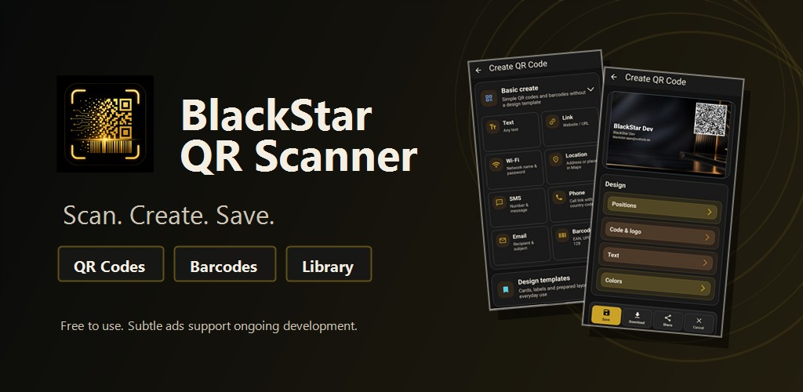
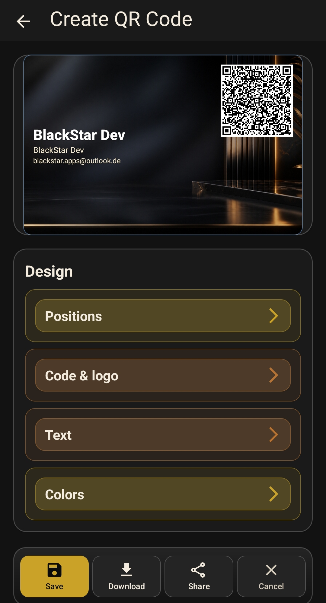
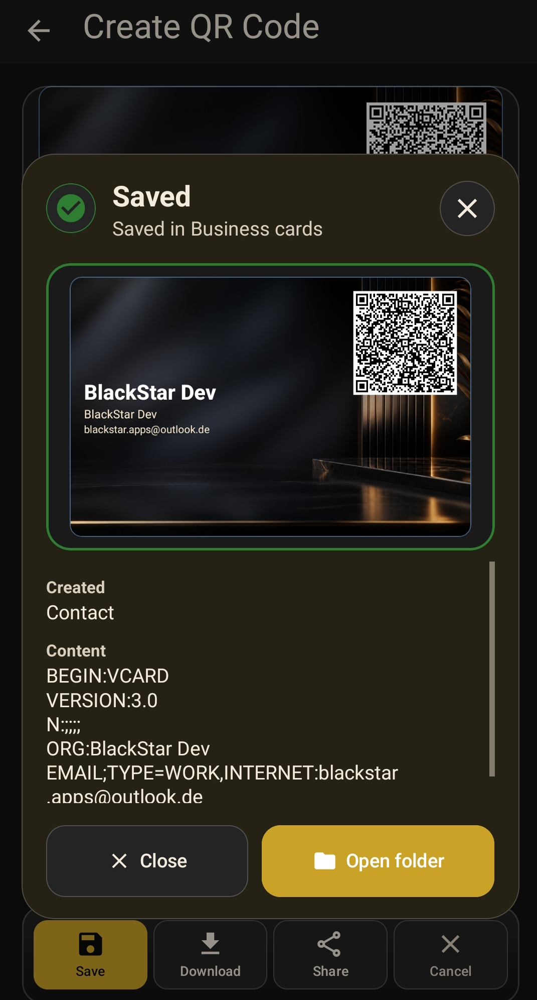
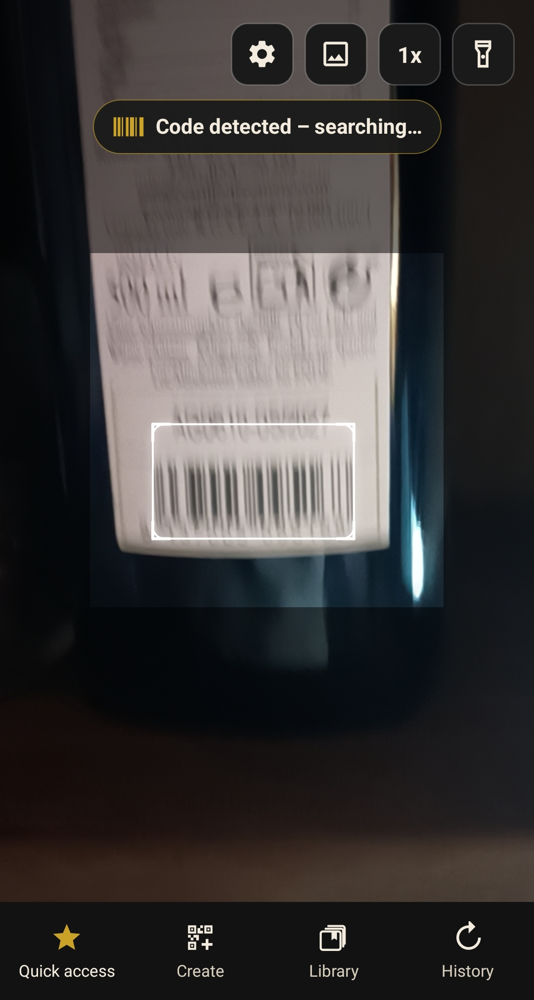
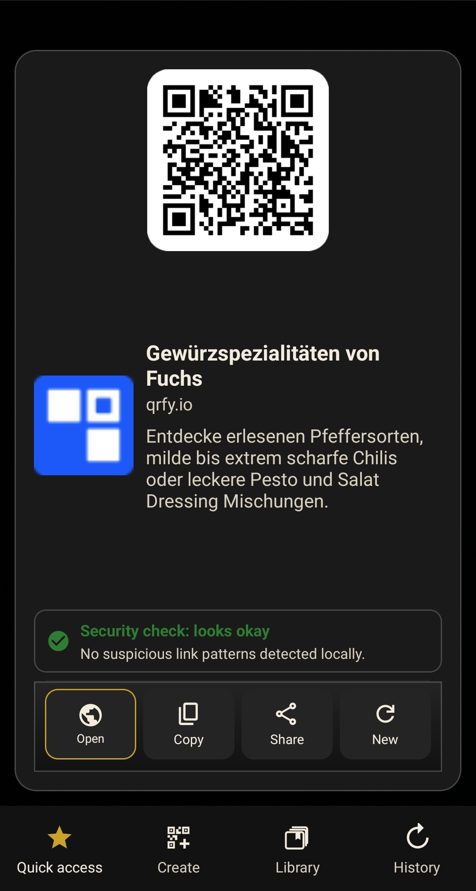
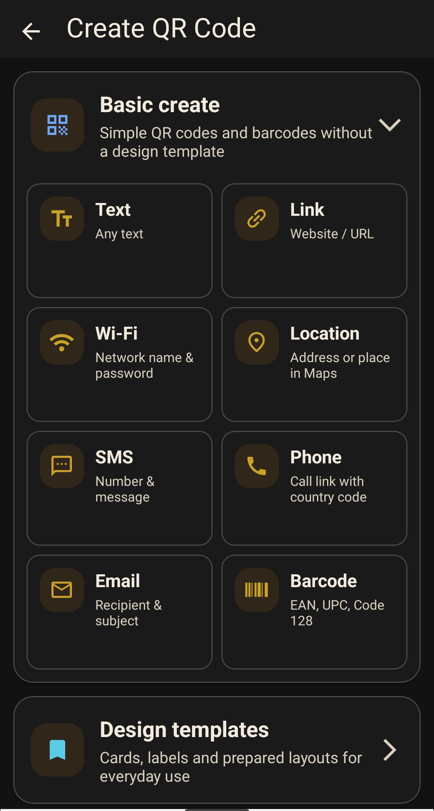
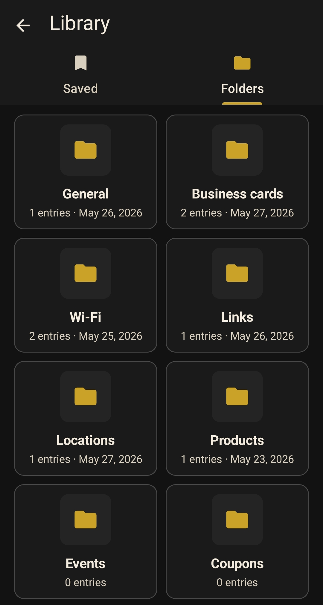

Scan clearly
QR codes, barcodes and web links are detected quickly and displayed in a readable result view.

QR code scanner and generator
BlackStar QR Scanner recognizes QR codes and barcodes, creates your own codes and keeps important results organized in your local library.
Free to use. Subtle ads support ongoing development.
Version 2.0
The app combines camera scanning, code creation, a local library, templates and local link safety hints in a calm dark interface.
QR codes, barcodes and web links are detected quickly and displayed in a readable result view.
Create QR codes for text, links, Wi-Fi, contacts, email, SMS and locations.
Save scanned and generated codes locally in folders and reuse them later.
Product barcodes can show details and give you useful actions for the code.
QR cards and business cards
Design QR cards with layouts, colors, fonts, logos, backgrounds and positioning. The QR code stays visible while text and visual details remain flexible.


Local link check
Web links can be checked locally on your device for suspicious patterns such as unsafe protocols, unusual characters, link shorteners or very long URLs. The local check does not send the link to an external security service.
Preview




Android app